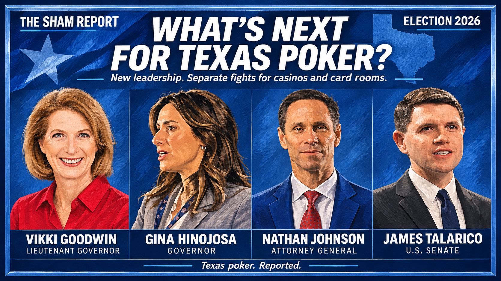

Patrick's Wall Fell. The Gambling Fight Isn't Over.
Dan Patrick is out and Democrats swept Texas' statewide races, so the lieutenant governor who helped block gambling legislation in the Senate is gone. But Republicans are expected to retain Senate control, any amendment still has to clear two-thirds of both chambers, and poker clubs are a separate fight. Here's what changed and what didn't.

IN THIS REPORT
If your group chat woke up this morning saying "legal poker is coming," slow down. Something big did shift in Austin overnight. What it means for casinos, and for the membership clubs where most of you actually play, is the open question.
The election snapshot
All results below are unofficial and uncertified at the time of writing (5:45 AM CT, Nov 4). The winners shown are based on media race calls.
- U.S. Senate: James Talarico (D) beat Ken Paxton, per AP.
- Governor: Gina Hinojosa (D) beat Greg Abbott, per AP. Abbott conceded.
- Attorney General: Nathan Johnson (D) beat Mayes Middleton, per AP (results, Texas Tribune).
- Lieutenant Governor: Vikki Goodwin (D) beat Dan Patrick, according to the AP race call as reported by KPRC Click2Houston. Patrick conceded. "It was a fair election, and I accept the majority will of the voters," he said in a statement (KPRC).
- Legislature: At the time of writing (about 5 AM CT, Nov 4), Republicans were expected to keep the Senate, and control of the House had not been confirmed (Texas Tribune, Texas Tribune).
Results will be certified later. Abbott, Patrick and Paxton stay in office until the winners take over in January 2027.
First, the Senate race
Talarico going to Washington is a big political story, but Talarico will not vote on Texas gambling legislation. Casinos, sports betting and poker rooms are decided in Austin.
Patrick lost, now what
Wikimedia Commons · CC BY-SA 4.0.
.jpg){kind=link}
Uploaded by Cole-Wilson-93. Display crop.
Patrick helped block gambling legislation in the Senate. In 2025, Johnson, now the AG-elect, filed his own casino resolution, SJR 82, as a state senator. It was referred to committee and never got a hearing (Texas Legislature Online).
That was the wall, and the man behind it just lost. Goodwin supports putting casinos and online sports betting to a vote (Fox 7 Austin). But she'll preside over a Senate where Republicans are expected to retain control. Much of the lieutenant governor's power comes from rules the senators adopt each session, and the Texas Tribune reports that the GOP majority could use them to curtail the office (Texas Tribune).
What it takes
Legalizing casinos takes a constitutional amendment. That means two-thirds of all members of each house, which is 100 of 150 House members and 21 of 31 senators, and then a majority of Texas voters (Tex. Const. art. XVII, §1).
Poker clubs are a different fight
Here's the part most casino coverage skips. Authorizing destination casinos and clarifying the law for existing membership poker clubs are two separate legislative efforts. State Rep. Guillen has carried the club side:
- HB 2345 (2023), by Guillen, with Senfronia Thompson, Longoria and Garcia, dealt with gambling-offense definitions and prosecution. It passed the House on May 4, 2023, then was referred to Senate State Affairs and went no further (Texas Legislature Online).
- HB 2996 (2025), by Guillen, proposed clarifying that a "private place" is one the public can't get into without a valid membership, special invitation or prior permission. It also would have defined "economic benefit" as direct winnings from a game, excluding anything received before a game starts or after the winnings are paid. That exclusion matters for clubs that charge memberships or seat fees. And it would have changed the private-place protection from an "affirmative" defense to a regular defense (bill analysis, bill text). It cleared House Licensing & Administrative Procedures 12–0 and was sent to Calendars on April 22, 2025, which is the last action listed (Texas Legislature Online).
These were ordinary statutory bills, rather than constitutional amendments, so they did not require a statewide referendum. But neither has become law.
Follow the Sands money
Texas Sands PAC is Sands' Texas political arm, and its 2024 checks went to both sides. According to Las Vegas Sands' own 2024 political contributions disclosure:
- $200,000 to Texans for Dan Patrick.
- $200,000 to Texans for Greg Abbott.
- $59,000 to Talarico, for his 2024 state House race.
Since then:
- Johnson has taken $125,000 from Texas Sands PAC, in data through Oct. 24 (TransparencyUSA).
- Middleton has a Sands tie too. Per The Real Deal, his top campaign consultant, Jordan Berry, is a registered Sands lobbyist (TransparencyUSA lobby record).
The lesson: taking Sands money doesn't predict what anyone does. Patrick took $200,000 from the PAC, and casino legislation still stalled in his Senate.
Where the winners stand
- Talarico voted for HJR 155 in 2023, a measure to let voters decide on casinos (House Journal, May 10, 2023, Record 1443). It died.
- Johnson, now the AG-elect, filed SJR 82 as a state senator in 2025 to put destination casino resorts to a statewide vote. It never got a hearing.
- Goodwin supports a vote on casinos and online sports betting.
- Hinojosa voted no on HJR 155 (Record 1443) and no on final adoption of HJR 102, the sports-betting amendment (House Journal, May 11, 2023, Record 1537). We have not identified a published gambling proposal from Hinojosa.
We have not verified their positions on membership poker clubs.
The AG piece
Photo: Texas Senate.
Johnson's win could matter for how gambling law gets interpreted. His position on poker clubs is unknown. Keep in mind what an AG opinion is and isn't: it's a written interpretation of existing law, persuasive but not binding, and it can't create or amend law (Texas State Law Library; Texas AG). Courts make the final call.
TSR opinion
Our read and predictions, not reported fact.
The wall is down, and the math is next. Senate leadership is changing hands. But the Senate sets its own rules, and Republicans could limit the lieutenant governor's authority. A casino amendment needs 21 senators and 100 House members. TSR has not established whether either chamber has the votes.
Best case is slow. If everything breaks right, a resolution passes in the 2027 session, voters weigh in in November 2027, and casinos open years after that.
The clubs may move on a different track. A Guillen-style clarification bill is the more direct path for membership rooms, and it doesn't need voters. Until something passes, clubs stay in the gray area, and local police and DAs keep deciding who gets raided.
Patrick's wall fell. The gambling fight isn't over.
Results are as of the time of writing (5:45 AM CT, Nov 4) and are unofficial.
Image credits
Cover: editorial illustration supplied by The Sham Report. Vikki Goodwin: Wikimedia Commons, uploaded by Cole-Wilson-93, CC BY-SA 4.0; display crop, with that crop available under the same license. Nathan Johnson: official Texas Senate member portrait, displayed at its supplied resolution.